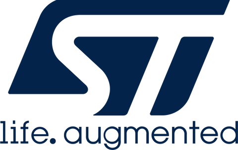

Internship Experience
Company Background
I had the incredible opportunity to intern at STMicroelectronics, Inc., a powerhouse in the semiconductor industry. With its rich history dating back to 1987, STMicroelectronics has become a global leader, producing cutting-edge microchips that power everything from electric vehicles to smartphones. Located in the Light and Industry Science Park II in Calamba, Laguna, the company is committed to innovation and sustainability, operating with a vision to positively impact lives through technology. As one of the largest semiconductor manufacturers, with a workforce of over 50,000 employees worldwide, STMicroelectronics serves a diverse clientele, including industry giants like Apple, Samsung, and Tesla.
Nature of Assignments
During my time in the Manufacturing Data Science (MDS) department, I was deeply immersed in the fascinating world of data analytics and machine learning. My primary assignment was to contribute to the Materials Efficiency Project, where I was entrusted with pivotal tasks that shaped the project's trajectory. My journey began with meticulous data preparation and engaging in Exploratory Data Analysis (EDA). This initial phase was crucial as it allowed me to delve into the structure of thte data, identify quality issues, and select features that would drive model performance.
Armed with Python and SQL, I not only learned to manipulate and analyze data but also became adept at creating robust data pipelines. Using the Dataiku platform, I designed and implemented ETL processes that ensured seamless data integration. My involvement in bi-weekly meetings with colleagues was equally significant, fostering collaboration and alignment within the project team.
Key Projects
One of the highlights of my internship was the focus on Material Efficiency. This project aimed to tackle challenges such as wastage and over-consumption of materials within the manufacturing process. Through data exploration, I was able to uncover patterns and identify opportunities for optimization that could lead to significant cost savings. The culmination of this work involved predictive modeling to forecast future material usage, ensuring proactive planning for resource management. A significant aspect of this process was the creation of a robust data pipeline to facilitate seamless data flow. See the photo below for example.
Another fascinating aspect of my role involved Parts Cropping, a vital task in a broader initiative aimed at detecting anomalies in dies produced through image processing. This process required meticulous attention to detail, as I developed algorithms to crop images accurately, ensuring they were centered and ready for analysis.
Learnings and Growth
My internship experience was a transformative journey that extended far beyond technical skill acquisition. I honed my abilities in data preparation and analysis, enhancing my statistical knowledge and familiarizing myself with advanced statistical methods. Utilizing tools like Dataiku and TIBCO Spotfire, I learned to create interactive dashboards that provided real-time insights into materials efficiency, empowering stakeholders with data-driven decision-making capabilities.
Beyond the technical skills, I developed crucial soft skills that are invaluable in a corporate environment. Navigating structured workflows, adhering to timelines, and collaborating with diverse teams were lessons that prepared me for future challenges. I learned the importance of effective communication, adapting to various interactions, whether in meetings or through written correspondence.
Realizations and Reflections
Throughout this journey, I realized that a career in Data Science mirrors the essence of continuous learning and collaboration found in academia, albeit with increased complexity and urgency. This experience solidified my passion for the field, highlighting the crucial balance between technical expertise and soft skills. I learned that camaraderie and teamwork are essential to fostering a productive work environment, while discipline proved more vital than fleeting motivation. Embracing challenges with resilience became key to my growth, and this journey reaffirmed my commitment to lifelong learning and collaboration in the ever-evolving landscape of Data Science.
Conclusion
In conclusion, my internship at STMicroelectronics was more than just a professional engagement; it was a pivotal chapter in my growth journey. The skills and insights I gained during this invaluable experience have not only equipped me for my future career in Data Science but have also instilled a sense of confidence and determination to pursue my passions.